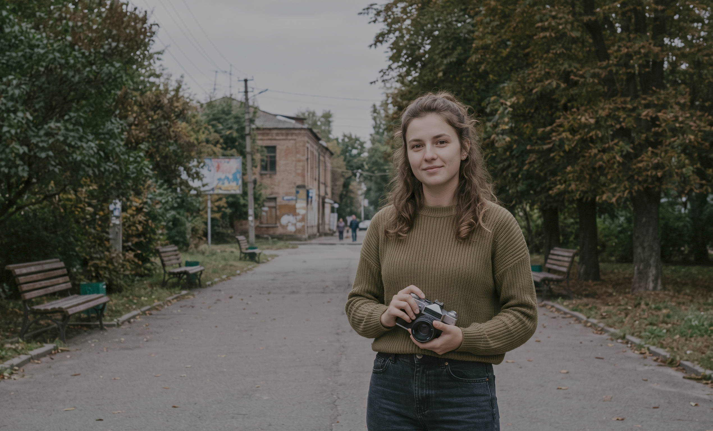

✨ Powered by ModernGL 32-Bit Linear Pipeline & Neural 3D Geometry
The Future of RAW Photography is Three-Dimensional
Experience professional, non-destructive 32-bit floating-point RAW editing with real-time progressive 3D Bokeh raymarching, neural surface normals relighting, and modular GPU shader plugins.

Interactive Raymarching Demo
Sensor RAW vs. Lumens Deep 3D Bokeh
Drag the interactive divider below to see how progressive 32-bit raymarching transforms flat sensor captures into rich cinematic portraits.
Original Flat RAW Sensor
Lumens Deep 3D Bokeh & OKLCH Grade

⬌
Deep Learning Image Restoration Demo
High-ISO Sensor Noise vs. NAFNet In-Memory Denoise
Drag the divider below to inspect true in-memory 32-bit linear restoration. Heavy photon shot noise and chrominance grain are completely removed while text, edges, and organic micro-textures stay tack-sharp.
Original Sensor RAW (High ISO)
Lumens Deep NAFNet AI Denoise (Clean & Sharp)


⬌